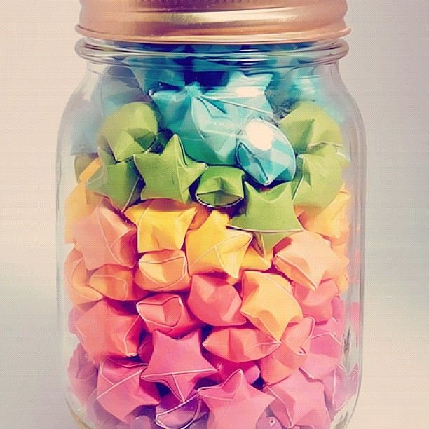
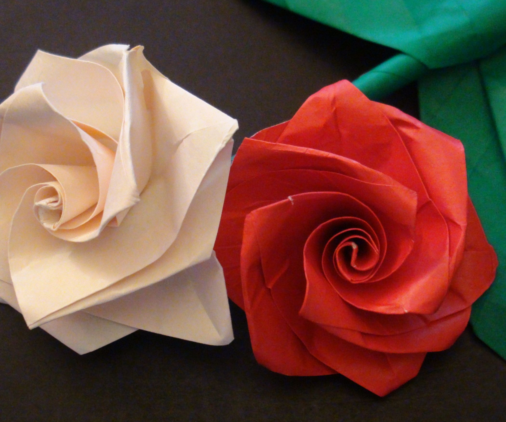
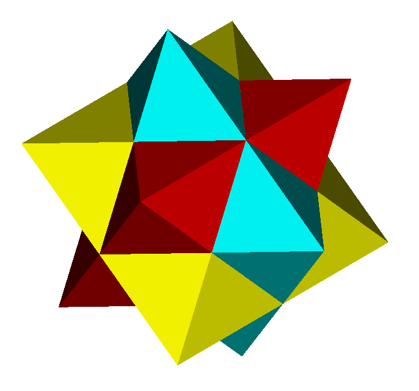
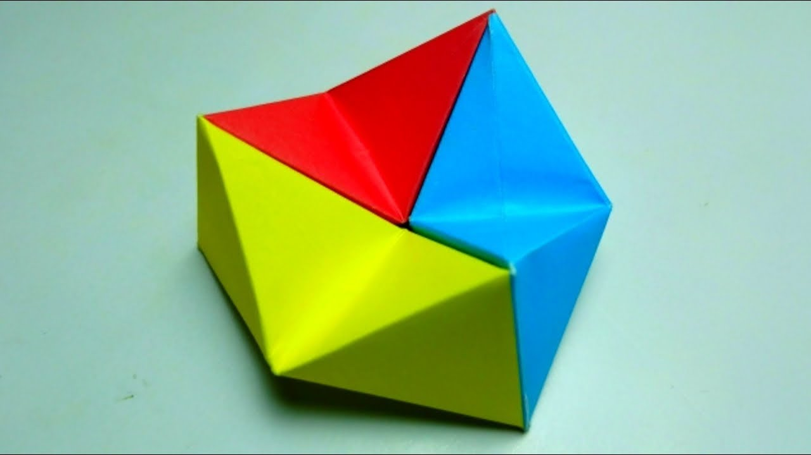

Lucky Paper Stars!
- These tiny paper stars are easy to make!
- A few of the steps resemble tying a knot, but with paper!
- They come in handy for DIY projects and decorators like, memory jars (write on the stip of paper before making it)!
Paper Camels!

- Camels reside in the harsh conditions of the desert.
- There are over 160 words for the camel in Arabic alone!
- To stop sand from getting in their eyes, camels have three sets of eyelids and two rows of eyelashes!
Paper Roses!
- The rose is a thorny flower that grows into a fruit, most well known in it's colour red.
- The world's oldest living rose is 1000 years old!
- Out of the many colours of the roses, black isn't one of them. Although species like "The Black Rose of Turkey" may seem black, they are simply and very dark shade of red that seem black the the human eye.
Yoshimoto Paper Cube!
- The Yoshimoto Cube is a polyhedral mechanical origami puzzle toy
- It was invented in 1971 by Naoki Yoshimoto.
- He discovered it when trying to find ways to cut a cube equally in half.
Paper Infinity Cube!
- The Infinite cube gets it's name because it never ends!
- They are incredibly simple to make!
- They have appeared on a lot of kid's projects channels ideas.
Flexagons!
- This origami design has the same use as
- They are often used as fidget cubes!
- They have appeared on a lot of kid's projects channels because they are fairly simple to make.